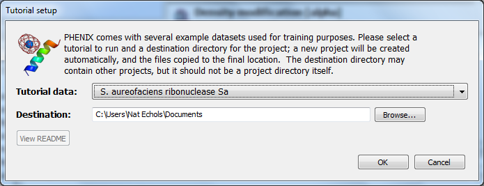
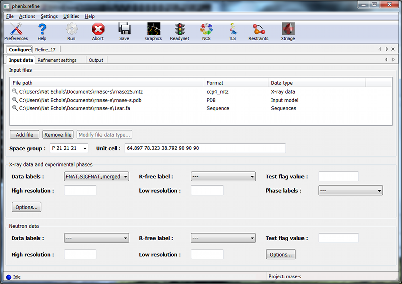
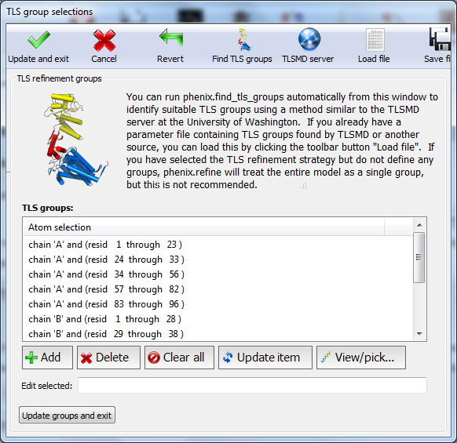
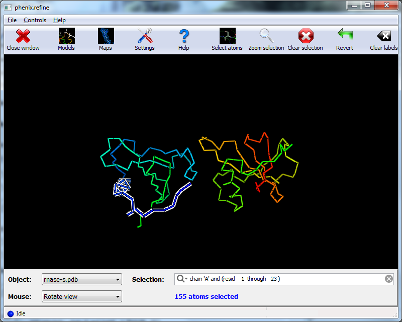
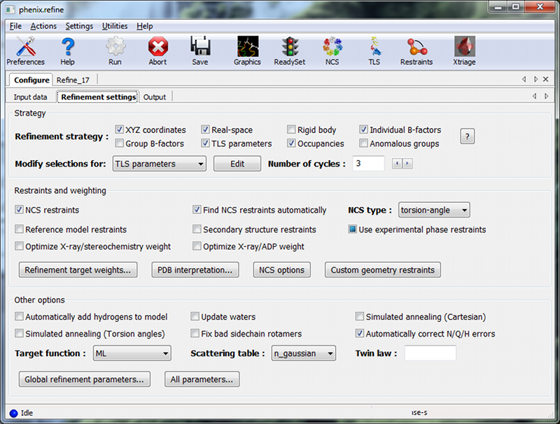
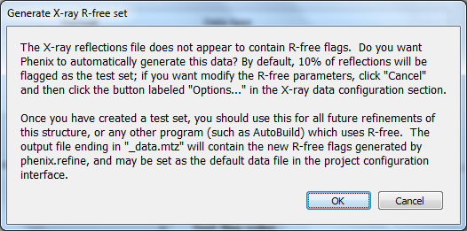
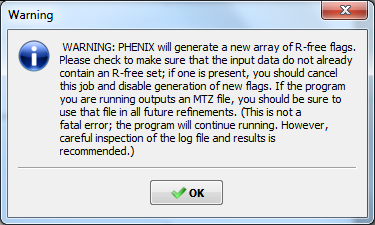
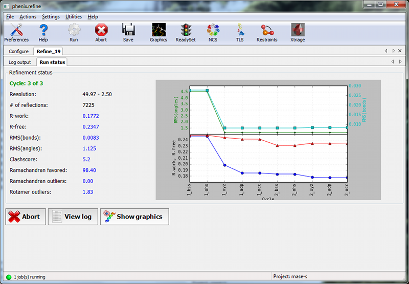
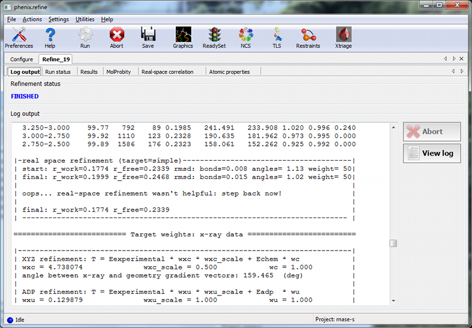
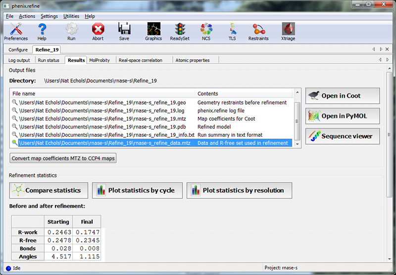

This tutorial will show you how to refine a simple structure using the PHENIX graphical user interface (GUI). Please read the phenix.refine documentation before running this tutorial, as it will familiarize you with the GUI and the options available for refinement. You may also find the dictionary of terms helpful.
The example used for this tutorial is called rnase-s, and can be set up in the GUI as described here. In the tutorial setup window, select the dataset labeled "S. aureofaciens ribonuclease Sa" under "Refinement", and click "Okay".

Once you have created the project, click the button labeled "phenix.refine" in the main GUI under "Refinement".
Only two input files are required for running phenix.refine with this dataset, the starting model and the reflections. These can be added either by dragging and dropping them into the input file list from the desktop, or by clicking "Add file" and selecting them from the dialog window.

The space group and unit cell will be loaded automatically; these will always be taken from the last symmetry-containing file to be added (in this case, the PDB file and reflections file both contain the symmetry information). The available data arrays for refinement will be listed in the "Data labels" drop-down menu; the first of these is what we want to use, and will be selected automatically. Because this structure predates the use of the R-free statistic in refinement, no R-free flags are available; these will be generated once refinement starts.
If you wish you may also input the file 1sar.fa, which is the protein sequence; this is not necessary for refinement itself but will be used to validate the model sequence at the end of the run.
The second configuration tab, Refinement settings contains most of the essential options for running phenix.refine. The first section controls the model parameters to be refined. For the rnase-s example, the XYZ coordinates, Real-space, Individual B-factors, and TLS strategies are appropriate. The Occupancies strategy is also selected by default, but since the default behavior will not affect any of the atoms in the rnase-s input model, it can be left on without negatively impacting runtime or the result quality.
All strategies can be applied to specific atoms by defining atom selections. For most of the strategies the default of refining all atoms is appropriate, but for TLS a more fine-grained division of groups is appropriate. Select "TLS parameters" from the drop-down menu labeled "Modify selections for". A new window will appear for defining TLS groups (the same window can also be opened by clicking "TLS" on the toolbar). Since PHENIX includes a built-in program to identify suitable TLS groups based on the input B-factors, we will use this. Click "Find TLS groups" on the toolbar to start this program; it will typically take 15 seconds to several minutes depending on the size of the structure and the number of processors used (on Windows this is limited to one).

When the program is finished, atom selections for the TLS groups will be loaded into the list. Select one of these and click the button labeled "View/pick" to display the selection visually; you can modify the selection manually if you want, but in this case the automatic selections are suitable. You can now save the TLS selections by clicking "Update and exit" on the toolbar of the TLS editor window.

In the "Restraints and weighting" section, you should activate the NCS restraints option, as the RNase-S structure contains two copies of the protein chain. For "NCS type", select "torsion-angle"; this will restrain the dihedral angles to be similar, instead of the older global-superposition based method, which does not allow for the small local deformations between chains which are present in this model.
For this particular structure, optimizing the X-ray/stereochemistry weight will be helpful, producing a model with a lower R-free and a smaller gap between R-work and R-free. However, since this takes significantly longer to finish, the optimization may be left off for the purposes of running the tutorial. The remainder of the options can also be left in the default state, although we recommend experimenting with Automatically add hydrogens to model, Update waters, Simulated annealing, and Fix bad sidechain rotamers to get a feel for how these options affect performance.
At this point the Refinement settings tab should look approximately like the image below:

The final tab controls output settings; these can also be left alone, but you may wish to set the run title, as this will appear in the job history in the main GUI. The output map coefficients will include a 2mFo-DFc and mFo-DFc map.
Click the "Run" button on the toolbar to start the program. Depending on the operating system and local setup, you may have multiple options to run the job: by default it will be start in the same process, which will allow faster communication with the GUI, but this also means that closing the GUI will kill the job. On Mac and Linux you will also have the option to run the job as "detached", which allows you to close the GUI, but lacks some features. Queuing systems are also supported on Linux. You can also view or edit the complete parameters file before running if desired. In this case, you should choose the first item in the menu ("Run now").
Because no R-free flags were present in the input file, a dialog will appear asking if you want to create new flags, with instructions for how to use these flags after refinement:

You should click "Okay" to proceed; if you want to adjust the parameters used for creating the flags, click "Cancel" and then edit settings in the dialog opened by clicking "Options" under "X-ray data" in the first configuration tab, then re-run. Immediately after the job starts, another window will appear warning you that new flags have been created:

This is not an error message, but prevents against unknowingly generating new R-free flags by mistake.
When the process starts, a new tab will appear, which contains two inner tabs. The second tab will be visible at first, and displays the basic refinement statistics (including R-factors, bond and angle deviations, and validation scores), both for the current model and plotted over the course of refinement:

The appearance of the R-factor plot is an important indicator of whether the selected refinement options are appropriate or not. In this case, since R-free flags were not previously used in refinement, the R-work and R-free will start out the same and immediately diverge. This is expected; however, the gap between the two values should stay relatively low, and R-free should still decrease over the course of refinement. A large increase in the gap indicates overfitting, and additional restraints and/or a more conservative optimization strategy may be required. If R-free increases during refinement, the changes in the model are not justified and the result should be discarded.
The first tab shows the complete log output:

You can also view the log file itself by clicking "View log". Experienced users may not find it necessary to inspect the log, but we recommend that you familiarize yourself with its contents, as it contains additional information that may be useful for debugging, as well as providing an overview of the program logic and workflow.
While refinement is running, if Coot is available on your system, it will be started and the current model and maps will be automatically loaded each time they change. This behavior can be disabled in the preferences (under "Graphics", but Coot can also be started during refinement by clicking "Show graphics" in the "Run status" tab. PyMOL is also supported. During refinement, the current model will be colored in cyan; at the end of refinement, the final model will be colored yellow.
Once the job completes, additional tabs will appear reporting the output files, final statistics and a variety of validation criteria:

The output files will mostly take the form ${PREFIX}_${RUN_ID}.${EXTENSION}, for instance "rnase-s_refine_19.mtz" in the image above; the prefix can be modified in the Output configuration tab. The run ID will be set automatically by the GUI. Files named using this convention include:
- .log: the same log output that appears in the GUI.
- .eff: the final effective parameters, including any automatic modifications performed internally.
- .geo: a complete listing of geometry restraints at the start of refinement, including both target and actual values, sorted by deviation from ideal.
- .pdb: the final refined model.
- .mtz: all reflection data associated with the run, including the R-free flags, the input data, the filtered data used in refinement (excluding outliers), the final "F(model)" (the calculated structure factors, including bulk solvent contribution), and map coefficients (including, by default, the 2mFo-DFc map with and without missing F-obs substituted by F-calc, the mFo-DFc map, and if anomalous data were used in refinement, the anomalous difference map).
Additionally, if modifications were made to the input data, including the generation of R-free flags, a file named ${PREFIX}_data.mtz will be included. If you created a new set of flags, as was done for this tutorial, you should always use this MTZ file for future refinements.
Guidelines for interpreting the validation results can be found in the documentation for the validation GUI or the external Molprobity tutorial from the Cold Spring Harbor Laboratory crystallography course.
This tutorial can also be run from the command line, although the final validation is only available from the GUI. The example files can be found here:
$PHENIX/examples/rnase-s
The equivalent command line arguments for the run described above are:
phenix.refine rnase-s.pdb rnase25.mtz xray_data.labels=FNAT,SIGFNAT,merged \ xray_data.r_free_flags.generate=True ncs=True ncs.type=torsion \ refine.strategy=individual_sites+individual_sites_real_space+individual_adp+tls+occupancies \ tls.find_automatically=True
Note that in the GUI, the identification of TLS groups was run interactively as a separate step prior to starting the job, rather than automatically during refinement. On the command line, you can run this command to obtain the TLS parameters:
phenix.find_tls rnase-s.pdb
Sevcik J, Dodson EJ, Dodson GG. (1991) Determination and restrained least-squares refinement of the structures of ribonuclease Sa and its complex with 3'-guanylic acid at 1.8 A resolution. Acta Crystallogr., Sect.B 47:240-253. PMID: 1654932